![]()
| n1 | n2 | n3 | E | k |
|---|---|---|---|---|
| ⚪ | ⚪ | ⚪ | 1 | 0 |
| ⚪ | ⚪ | 🔵 | 2 | 1 |
| ⚪ | 🔵 | ⚪ | 3 | 1 |
| ⚪ | 🔵 | 🔵 | 4 | 2 |
| 🔵 | ⚪ | ⚪ | 5 | 1 |
| 🔵 | ⚪ | 🔵 | 6 | 2 |
| 🔵 | 🔵 | ⚪ | 7 | 2 |
| 🔵 | 🔵 | 🔵 | 8 | 3 |
Probabilità e distribuzioni di probabilità
ADCOM 2025-2026
Ultimo aggiornamento: 03-04-2026
Riferimenti
Un’ottima introduzione a questi temi si può trovare in:
Kruschke, J. K. (2015). Doing Bayesian Data Analysis. https://doi.org/10.1016/c2012-0-00477-2
Kruschke (2015)
Lancio di una moneta
Se dovessimo descrivere l’evento lancio di una moneta per \(n\) volte in termini sperimentali, quali sarebbero gli elementi?
- numero totale di lanci \(n\).
- esiti possibili (di un singolo lancio) sono due: testa (1) e croce (0). Per ogni lancio possiamo avere un solo esito.
- possiamo contare il numero di teste \(k\) (o di croci) rispetto al numero totale di lanci \(n\).
Se lanciamo la moneta molte volte (\(n\) grande) il numero di teste sul totale \(k/n\) è la frequenza relativa dell’evento testa su \(n\) lanci. Ovviamente \(1 - k/n\) è la frequenza relativa dell’evento croce.
Lancio di una moneta
- Abbiamo, in questo esempio, definito praticamente tutti gli elementi importanti della probabilità. Definiamo più formalmente lancio di una moneta con fenomeno casuale.
- L’insieme di tutti gli esiti possibili (testa o croce) è definito spazio campionario \(S\). Inoltre gli esiti possibili devono essere tra loro mutualmente esclusivi (o testa o croce) e complessivamente esaustivi (testa + croce = tutti gli esiti).
- Un evento \(E\) è definito come un sottoinsieme di \(S\)
Esempio:
- Fenomeno casuale: lancio moneta
- Spazio campionario: \(S = \{0, 1\}\) (1 = testa, 0 = croce)
- Evento (testa): \(E = \{1\}\)
Lancio di \(n\) monete
Ora immaginiamo di avere il fenomeno casuale lancio di una moneta per 3 volte. Il nostro spazio campionario è il seguente:
Abbiamo \(2^n = 2^3 = 8\) possibili esiti (dove l’ordine conta).
Lancio di \(n\) monete
Ora, se immaginiamo che ognuno di questi esiti sia equiprobabile e non ci siano altri esiti possibili, possiamo assegnare ad ognuno la stessa probabilità di \(1/8\). In altri termini diciamo che il totale (100%, 1) è diviso per ogni evento possibile \(1/8 = 0.125\).
Qui stiamo facendo un’assunzione implicita, ovvero che per ogni lancio la probabilità di 🔵 sia la stessa di ⚪. Chiamiamo questa probabilità di 🔵 \(\theta\). Se per ogni lancio può accadere 🔵 o ⚪, quindi possiamo definire \(\theta\) e \(1 - \theta\) come le rispettive probabilità.
Lancio di \(n\) monete
Se l’evento ottengo 3x 🔵 ha probabilità 0.125 equivale a dire che la probabilità di ottenere 3 teste è \(\theta \times \theta \times \theta\) o \(\theta^3\). Se la probabilità di 🔵 \(\theta = 0.5\) allora \(\theta^3 = 0.5^3 = 0.125\).
La probabilità di ottenere ⚪ è \(1 - \theta = 0.5\) quindi anche ottengo 3x ⚪ è \(0.125\).
Quindi di tutti gli eventi \(E\) dello spazio campionario \(S\) c’è una funzione \(f(\cdot)\) che dipende da alcuni parametri (\(\theta\)) e assegna un valore di probabilità ad ogni \(E\).
Lancio di \(n\) monete
Graficamente possiamo rappresentare \(S\) in questo modo:
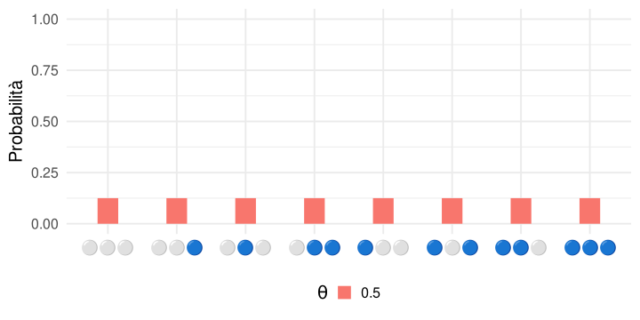
Lancio di \(n\) monete
Ora possiamo anche immaginare che \(\theta \neq 1 - \theta\). In altri termini assegniamo una probabilità diversa ai due possibili esiti.
| n1 | n2 | n3 | E | k | theta 0.2 | theta 0.5 | theta 0.8 |
|---|---|---|---|---|---|---|---|
| ⚪ | ⚪ | ⚪ | 1 | 0 | 0.512 | 0.125 | 0.008 |
| ⚪ | ⚪ | 🔵 | 2 | 1 | 0.128 | 0.125 | 0.032 |
| ⚪ | 🔵 | ⚪ | 3 | 1 | 0.128 | 0.125 | 0.032 |
| ⚪ | 🔵 | 🔵 | 4 | 2 | 0.032 | 0.125 | 0.128 |
| 🔵 | ⚪ | ⚪ | 5 | 1 | 0.128 | 0.125 | 0.032 |
| 🔵 | ⚪ | 🔵 | 6 | 2 | 0.032 | 0.125 | 0.128 |
| 🔵 | 🔵 | ⚪ | 7 | 2 | 0.032 | 0.125 | 0.128 |
| 🔵 | 🔵 | 🔵 | 8 | 3 | 0.008 | 0.125 | 0.512 |
Lancio di \(n\) monete
Graficamente possiamo rappresentare \(S\) in questo modo:
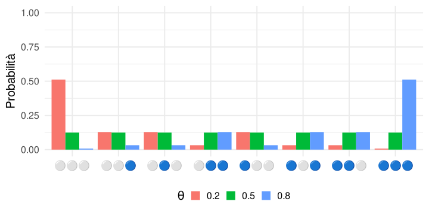
Lancio di \(n\) monete
Quello che stiamo facendo (implicitamente) è usare una funzione \(f(\cdot)\) che in base ad alcuni parametri (\(\theta\)) assegna ad ogni \(E\) di \(S\) una certa probabilità.
L’idea è che \(S\) sia sempre lo stesso con tutti i suoi \(E\), al variare dei parametri (\(\theta\)) cambia il valore di output della funzione.
Quindi possiamo provare a costruire \(f(\cdot)\). Abbiamo detto che la probabilità di ottenere \(k\) 🔵 è \(\theta^k\) (\(\theta \times \theta \dots\)) e la probabilità di ottenere \(n - k\) ⚪ è \((1 - \theta)^{(n - k)}\).
Funzione di probabilità \(f(\cdot)\)
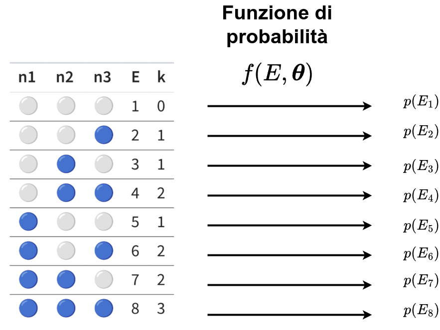
Lancio di \(n\) monete
Ora immaginiamo di voler trovare la probabilità (e quindi avere una certa \(f(\cdot)\)) dell’evento ottenere k teste. Nel nostro caso ad esempio \(k = 2\).
| n1 | n2 | n3 | E | k | theta 0.5 |
|---|---|---|---|---|---|
| ⚪ | ⚪ | ⚪ | 1 | 0 | 0.125 |
| ⚪ | ⚪ | 🔵 | 2 | 1 | 0.125 |
| ⚪ | 🔵 | ⚪ | 3 | 1 | 0.125 |
| ⚪ | 🔵 | 🔵 | 4 | 2 | 0.125 |
| 🔵 | ⚪ | ⚪ | 5 | 1 | 0.125 |
| 🔵 | ⚪ | 🔵 | 6 | 2 | 0.125 |
| 🔵 | 🔵 | ⚪ | 7 | 2 | 0.125 |
| 🔵 | 🔵 | 🔵 | 8 | 3 | 0.125 |
Lancio di \(n\) monete
Quindi non essendo interessati all’ordine ma solo ad avere \(k = 2\) teste possiamo sommare le singole probabilità (come avere più fette di 1/8). In totale abbiamo 8 esiti e creiamo una variabile casuale \(K\) definita come numero di teste che raggruppa gli 8 esiti in 4 valori \(\{0, 1, 2, 3\}\). La nostra funzione adesso assegna ad ognuno di questi valori della variabile casuale una probabilità.
| k | E | theta 0.5 |
|---|---|---|
| 0 | ⚪⚪⚪ | 0.125 |
| 1 | 🔵⚪⚪ | 0.375 |
| 2 | 🔵🔵⚪ | 0.375 |
| 3 | 🔵🔵🔵 | 0.125 |
Lancio di \(n\) monete
Quindi proviamo a definire una regola generale. Dati \(n\) lanci la probabilità di ottenere \(k\) 🔵 con \(\theta = 0.5\).
\[ \theta^k (1 - \theta)^{n - k} \]
Che sarebbe come dire, la sequenza 🔵🔵⚪ è ottenibile con:
\[ \theta \times \theta \times (1 - \theta) \]
Oppure
\[ \theta^k (1 - \theta)^{n - k} \]
Lancio di \(n\) monete
Però non stiamo considerando il fatto che possiamo ottenere \(k = 2\) in 3 modi diversi 🔵🔵⚪, 🔵⚪🔵 e ⚪🔵🔵. Ci serve un modo per capire in quanti modi diversi possiamo ottenere \(k\) successi su \(n\) lanci. Questo si chiama coefficiente binomiale \({n \choose k}\):
\[ {n \choose k} = \frac{n!}{k!(n - k)!} \]
Lancio di \(n\) monete
La scrittura \(x!\) si legge come \(x\) fattoriale e indica:
\[ x! = x \times (x-1) \times (x-2) \times \dots \times 1 \]
Quindi è la moltiplicazione di \(x\) con \(x - 1\) e poi con \(x - 2\) e così via. Nel caso di \(x = 4\):
\[ 4! = 4 \times 3 \times 2 \times 1 \]
In R possiamo usare factorial():
Lancio di \(n\) monete
Quindi \(n!\) ci dice tutte le possibili combinazioni di 🔵🔵⚪ (quando \(n = 3\))
- ⚪⚪🔵
- ⚪🔵⚪
- 🔵🔵⚪
- ⚪🔵🔵
- 🔵⚪⚪
- 🔵⚪🔵
Infatti \(n! = 3! = 3 \times 2 \times 1 = 6\). Non ci interessa l’ordine quindi dividiamo per il numero di combinazioni di 🔵🔵 ovvero \(2! = 2\) e il numero di combinazioni (senza ordine) di ⚪ è \(1! = 1\). Quindi facciamo \(6/2 = 3\). Abbiamo 3 modi diversi di ottenere 🔵🔵⚪ (2 🔵 e 1 ⚪).
Lancio di \(n\) monete
Quindi, il coefficiente binomiale \({n \choose k}\) ci dice in quanti modi possiamo ottenere (senza considerare l’ordine) \(k\) 🔵 in \(n\) lanci. In R possiamo usare la funzione choose() (che usa la funzione factorial()):
Lancio di \(n\) monete
Tornando alla formula di prima:
\[ \theta^k (1 - \theta)^{n - k} \]
Questa formula ci dice la probabilità di ottenere una sola sequenza di ⚪🔵🔵. Dobbiamo moltiplicare questa probabilità per tutte le possibili combinazioni, ovvero il coefficiente binomiale.
\[ {n \choose k} \theta^k (1 - \theta)^{n - k} \]
Lancio di \(n\) monete
Proviamo manualmente (in R):
Esattamente identico a quello che abbiamo calcolato dalla tabella con ⚪🔵.
Quindi?
Quello che abbiamo fatto è trovare una formula generica per calcolare la probabilità di \(k\) successi su \(n\) esperimenti con due possibili esiti (successo e insuccesso).
\[ p(k \mid \theta, n) = {n \choose k} \theta^k (1 - \theta)^{n - k} \]
Questa è esattamente una funzione di probabilità \(f()\) che si chiama Binomiale.
La funzione di probabilità Binomiale assegna ad ogni possibile esito un certo valore di probabilità.
Ora più formalmente…
Con questo esempio abbiamo costruito una funzione di probabilità che assegna dei numeri agli eventi dello spazio campionario. Affinchè tali numeri possano essere definiti probabilità, devono sussistere le seguenti condizioni (Kolmogorov, 1956):
- Un valore di probabilità deve essere non negativo
- La somma delle probabilità di tutti gli esiti dello spazio campionario deve essere pari a 1.
- Dati due eventi mutuamente esclusivi dello spazio campionario, la probabilità che si verifichi uno o l’altro evento è pari alla somma delle probabilità dei singoli eventi
\(p(A \cap B)\)
Inoltre abbiamo visto che la probabilità che \(A\) e \(B\) accadano insieme, formalmente \(p(A \cap B) = p(A) p(B \mid A)\). Dove \(\mid\) sta per condizionato a. Nel caso in cui \(A\) e \(B\) siano indipendenti allora \(p(A \cap B) = p(A) p(B)\) (come per le monete). Nel nostro caso la probabilità di ottenere 🔵🔵 con \(\theta\) è \(\theta \cdot \theta\).
Perchè moltiplico?
Il concetto si vede bene disegnando i lanci in modo progressivo. Seguendo una strada particolare è come moltiplicare la probabilità ad ogni nuovo step.
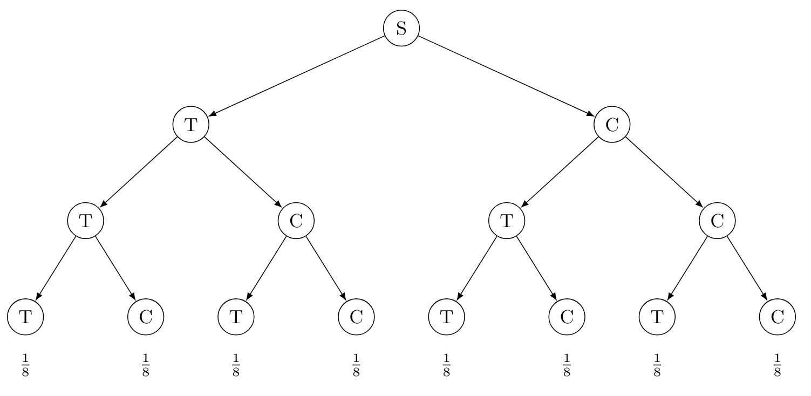
\(p(A \cap B)\) e probabilità condizionata
Prima abbiamo detto che \(p(A \cap B) = p(A) p(B \mid A)\) dicendo che \(\mid\) sta per condizionato a. Infatti, nel caso di eventi dipendenti la probabilità condizionata è calcolata come:
\[ p(B \mid A) = \frac{p(A \mid B) p(B)}{p(A)} \]
Questo è il Teorema di Bayes che descrive la probabilità condizionata. Nel caso di eventi indipendenti \(p(B|A) = p(B)\) (e viceversa) è sufficiente moltiplicare. Questo argomento richiederebbe molte più ore, se volete approfondire trovate i capitoli indicati.
Ricapitolando
Lo spazio campionario \(S\) è l’insieme di tutti gli eventi \(E\) possibili.
Una funzione di probabilità \(f(E \mid \boldsymbol{\theta})\) assegna all’evento \(E\) una certa probabilità usando una funzione con una serie di parametri \(\boldsymbol{\theta}\).
Distribuzioni di probabilità discrete
L’esempio che abbiamo (moneta) fatto è un tipo particolare di funzione di probabilità che viene definita discreta. Il motivo è che lo spazio campionario (numero di teste) è formato da eventi discreti (0, 1, 2, …).
Altri esempi possono essere:
- numero di errori in un compito sperimentale
- numero di sintomi
- …
Distribuzioni di probabilità continue
Ci sono anche casi dove lo spazio campionario non è discreto ma continuo. In questo caso parliamo di distribuzioni di probabilità continue.
Alcuni esempi:
- tempo passato da un certo momento
- tempi di reazione
- …
Distribuzioni di probabilità continue
Una di queste distribuzioni la conoscete sicuramente, quella Normale (Gaussiana).
\[ p(x \mid \mu, \sigma^2) = \frac{1}{\sqrt{2\pi\sigma^2}} e^{-\frac{(x-\mu)^2}{2\sigma^2}} \]
La logica è molto simile, abbiamo uno spazio campionario continuo da \(-\infty\) a \(+\infty\) e la funzione assegna un valore ad ogni possibile evento in base a \(\mu\) e \(\sigma^2\).
Distribuzioni di probabilità continue
Proviamo a scriverla come per quella Binomiale:
Proviamo ora a cambiare i parametri:
Notate qualcosa di strano? Ricordo che la funzione dovrebbe restituire una probabilità (come nel caso Binomiale).
Distribuzioni di probabilità continue e densità
Nel secondo esempio, abbiamo un valore decisamente maggiore di 1. Questo chiaramente è indice che la funzione sta restituendo qualcosa di diverso.
Infatti, nel caso continuo non si parla di probabilità di un singolo evento (come nel caso discreto) ma si parla di densità. La probabilità di un singolo evento (in uno spazio continuo) è 0 mentre la densità è definita.
Distribuzioni di probabilità continue e densità
Per capirlo, riprendiamo una distribuzione di probabilità discreta del lancio delle 3 monete.
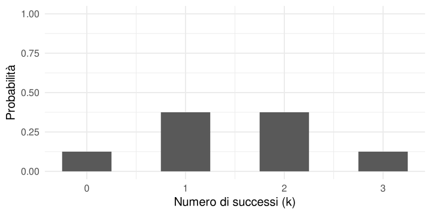
Distribuzioni di probabilità continue e densità
La somma delle 4 probabilità è 1 ovviamente, essendo questa una distribuzione di probabilità.
Dal punto di vista geometrico, se li pensiamo come rettangoli l’area è base x altezza \(b \times h\).
Nel nostro caso sono numeri discreti (0, 1, 2, …) quindi la base è 1 per definizione e l’altezza è la probabilità.
Distribuzioni di probabilità continue e densità
Pensiamo adesso ad un caso continuo. Immaginiamo di avere questo tipo di distribuzione di probabilità:
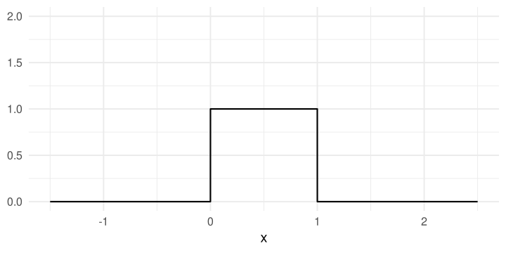
Distribuzioni di probabilità continue e densità
La differenza è che \(S\) ora è formato da tutti i numeri (reali) nell’intervallo \([0, 1]\). Non possiamo più avere eventi dicreti come nel caso precedente.
Tuttavia, se calcoliamo l’area sempre come un rettangolo otteniamo sempre 1 \(b \times h = 1 \times 1\).
Però, l’altezza di ogni punto \(x\) che corrispondeva alla probabilità nel caso discreto ora chiaramente NON è una probabilità. L’area è 1 ma l’altezza dei singoli valori no.
Distribuzioni di probabilità continue e densità
Quando abbiamo una variabile continua, la probabilità di un singolo valore \(p(x) = 0\). In questo caso si parla di densità di probabilità, solitamente si scrive come \(f(x)\) (invece di \(p(x)\) nel caso discreto).
Distribuzioni di probabilità continue e densità
Immaginiamo di creare un rettangolo di base \(b = 0.2\), l’area in questo caso sarebbe \(0.2 \times 1 = 0.2\). Se sommiamo tutti questi rettangoli abbiamo 1 ovviamente.
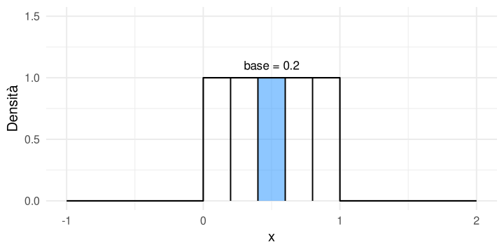
Distribuzioni di probabilità continue e densità
Ora proviamo a ridurre la base ancora. L’area ora è \(0.02 \times 1 = 0.02\). Ma la somma di tutti i rettangoli è sempre 1.
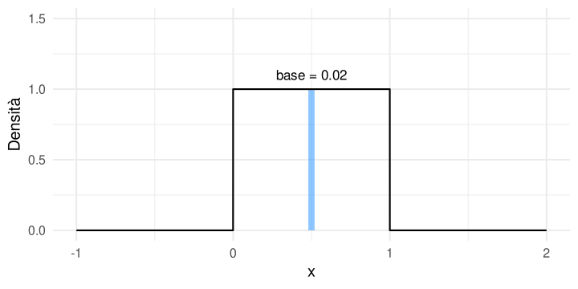
Distribuzioni di probabilità continue e densità
Se immaginiamo di ridurre la base ad un numero infinitamente piccolo (\(~ 0\)) l’area (ovvero la probabilità) diventa 0.
Tuttavia, se sommiamo tutti i rettangoli a prescindere dalla base, otteniamo comunque il totale ovvero 1.
La densità \(f(x)\) può essere maggiore di 1 (al contrario della probabilità) ma l’area sotto la curva (integrale) è sempre 1.
Distribuzioni di probabilità continue e densità
Più formalmente:
\[ p(a \leq x \leq b) = \int^b_a f(x) dx \]
Dove \(f()\) è la funzione di probabilità continua (ad esempio quella della normale). In particolare:
\[ \int^{\infty}_{- \infty} f(x) dx = 1 \]
Quindi l’integrale (area) è sempre 1 e la probabilità è definita solo per un intervallo, non per un singolo valore \(x\).
Distribuzioni di probabilità continue e densità
In questo caso abbiamo 3 distribuzioni normali con medie e deviazioni standard diverse. L’area è sempre 1 ma le densità cambiano notevolmente.
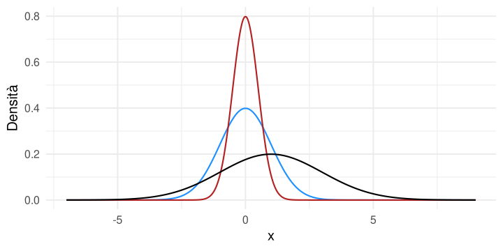
Ricapitolando
Una distribuzione di probabilità è una funzione \(f()\) che assegna un valore ad ogni elemento/esito \(x\) dello spazio campionario \(S\). Abbiamo due tipologie di spazi campionari:
- \(S\) discreto (valori interi): in questo caso \(f(x)\) assegna un valore di probabilità (\(0 \leq p(x) \leq 1\)) ad ogni possibile esito. Il totale è 1 \(\sum_{x \in S} f(x) = p(x) = 1\). In questo caso parliamo di funzione di massa di probabilità (PMF, Probability Mass Function).
- \(S\) continuo: in questo caso \(f(x)\) assegna un valore di densità di probabilita (\(f(x) \geq 0\)). L’area sotto la curva invece è sempre 1 \(\int^{\infty}_{- \infty} f(x) dx = 1\). In questo caso parliamo di funzione di densità di probabilità (PDF, Probability Density Function).
In generale, \(f(x \mid \boldsymbol{\theta})\) ha sempre uno o più parametri \(\boldsymbol{\theta}\) (grassetto per uno o più) che determinano il valore che un certo \(x\) assumerà in termini di densità o probabilità.
Qualche altro esempio, Poisson [#extra]
La distribuzione di Poisson descrive la probabilità (PMF) per eventi discreti. Si usa per contare il numero di eventi in un certo lasso di tempo. Lo spazio campionario è \(\{0, 1, 2, \dots \}\):
\[ f(x \mid \lambda) = p(x \mid \lambda) = \frac{\lambda^x e^{-\lambda}}{x!} \]
La formula è nuova (non la vedremo) ma la logica è la stessa. Per ogni possibile esito discreto \(x\), la funzione assegna una probabilità in funzione dell’unico parametro \(\lambda\).
Qualche altro esempio, Poisson [#extra]
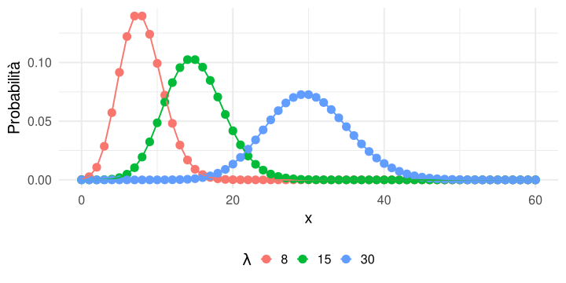
Qualche altro esempio, Beta [#extra]
La distribuzione Beta è una distribuzione di probabilità continua ma compresa tra 0 e 1.
\[ f(x \mid \alpha, \beta) = \frac{x^{\alpha-1}(1-x)^{\beta-1}}{B(\alpha, \beta)} \]
Qualche altro esempio, Beta [#extra]
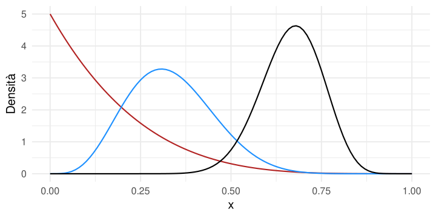
Kruschke, J. K. (2015). Doing Bayesian Data Analysis. https://doi.org/10.1016/c2012-0-00477-2